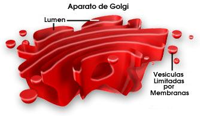

El aparato de Golgi, es también llamado complejo o cuerpo de Golgi, se encarga de la distribución y el envio de los productos químicos de la célula.
Modifica proteínas y lípidos (grasas) que han sido construidos en el retículo endoplasmático y los prepara para expulsarlos fuera de la célula.